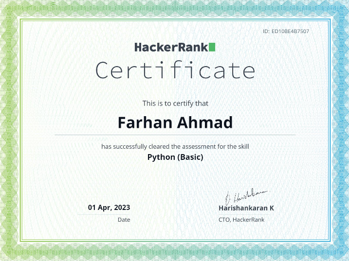

I possess exceptional problem-solving skills that have been refined through both academic and real-world experiences. With a logical and analytical approach, I excel at breaking down complex issues into manageable components, identifying the underlying causes, and developing innovative solutions. I embrace challenges as opportunities for growth, leveraging my critical thinking abilities and collaborating with diverse perspectives to find optimal outcomes. Through practical application and a solution-oriented mindset, I am equipped to navigate obstacles with confidence and achieve successful results.
My writing prowess sets me apart as a skilled and effective communicator. With a keen eye for detail and a passion for crafting compelling narratives, I have honed my writing abilities to convey ideas with clarity and impact. Whether it's crafting persuasive essays, engaging articles, or captivating stories, I have developed a unique voice that resonates with readers. I am adept at conducting thorough research, organizing information cohesively, and delivering content that captivates and informs. Through meticulous editing and a commitment to continuous improvement, I consistently produce high-quality written work that engages, inspires, and leaves a lasting impression.
I started coding about a year and a half ago, although I think I wasted most of that time. Well, I'm not that sad about it. Even though I wasted that time, I was still active in a lot of programming groups and Discords. This allowed me to form a team of my own, consisting of four people with different skill sets but the same ambition to learn how to code and become good programmers. Since we were all new to programming, we learned new topics and taught each other, which helped me learn new topics quickly and gave me motivation to learn more. I wanted to help my friends who were learning with me. Because of them, I started learning Python, a well-known programming language in the programming community. I spent a couple of months learning new skills, new modules, and working on new projects. To view any of my projects, please click here. With the help of these projects, I was able to become somewhat proficient in Python, which led me to apply for a certificate. To my surprise, I actually passed the test with a perfect score and obtained the certificate.
